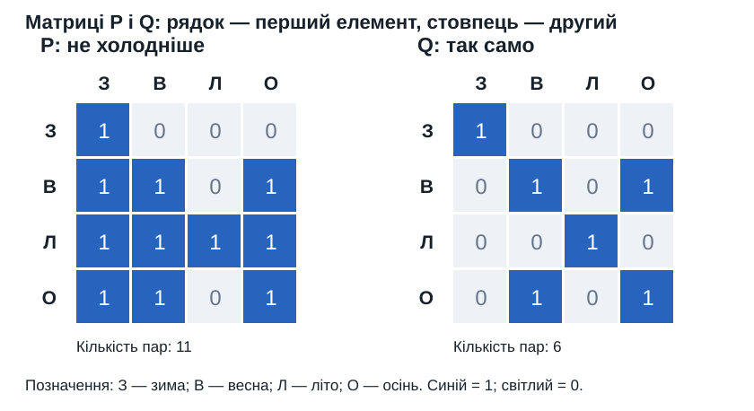
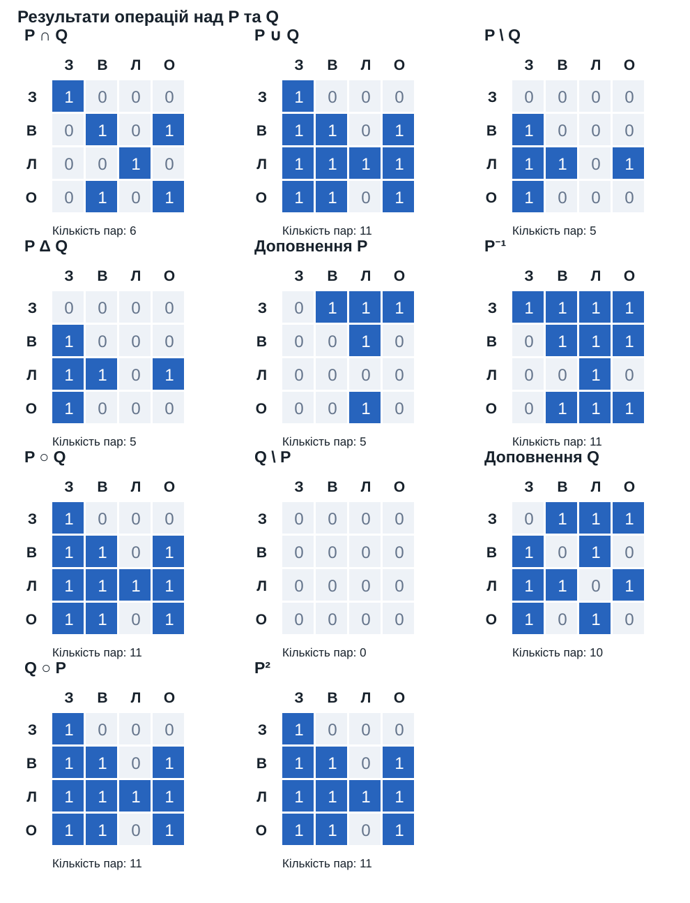
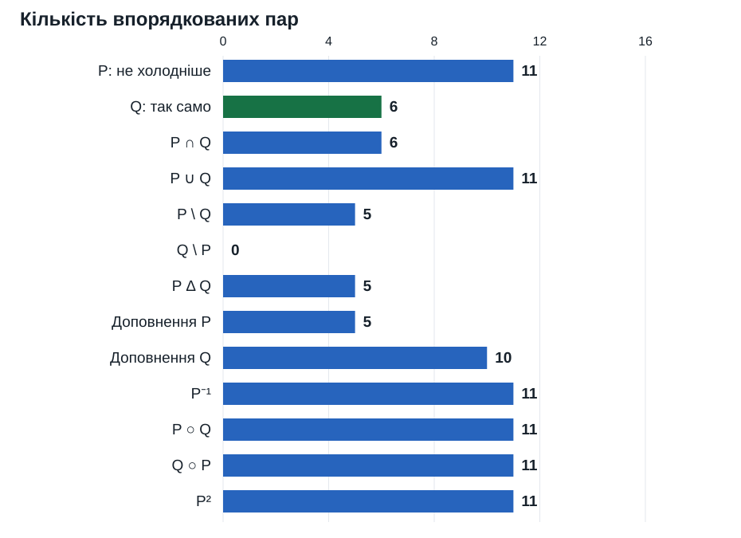

Бінарні відношення та операції над ними
Біжик Юрій Володимирович · ФЕІ-34с · варіант 1
P: не холодніше; Q: так само. Весна й осінь мають однаковий порядковий рівень.

Рисунок 1 — Матриці початкових відношень P і Q
Рисунок 2 — Матриці результатів основних операцій
Рисунок 3 — Кількість пар у кожному відношенніPDF-звіт · Повні результати JSON